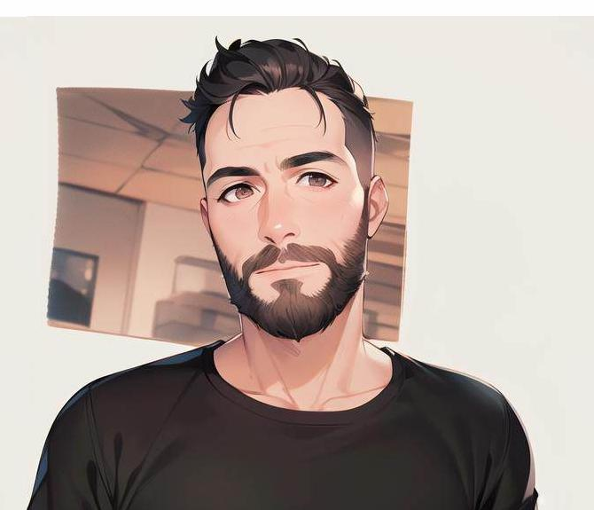

#html #css #integration
A propos de moi_

- Nom : Castillo
- Prenom : Johan
- Age : 36 ans
- Ville : Perpignan
- Centres d'intérets : Tennis, Lecture, VTT , Hardware, Randonnée
Hello, moi c’est Johan, depuis 12 ans employé de commerce chez Électro Dépôt, en 2023 je décide de prendre un grand tournant dans ma vie, et je me lance dans une reconversion professionnelle dans le Développement informatique.
Pourquoi le développement informatique ? Cela peut paraître bateau pour certains mais qu’il en soit ainsi, depuis fort longtemps j’apprécie le « code », pas forcement un seul d’ailleurs. Aux alentours de mes 13 ans, j'ai commencé en autodidacte avec du Visual Basic et des bases de C, plus tard je me suis intéressé à HTML et CSS, j’apprenais encore et toujours, et ça c’était chouette !
la suite..
Rentré vite dans la vie active, j’étais moins disponible pour continuer ma montée en compétences, néanmoins j’ai conservé cette soif d’apprendre, sur mon temps libre, j’ai pu découvrir des notions de PHP ainsi que plus récemment Python.
Aujourd’hui ma reconversion me permet d’acquérir de nouvelles notions, les bonnes pratiques à respecter, des mini projets pour m’entraîner et enfin envisager mon changement de carrière dans les mois à venir !